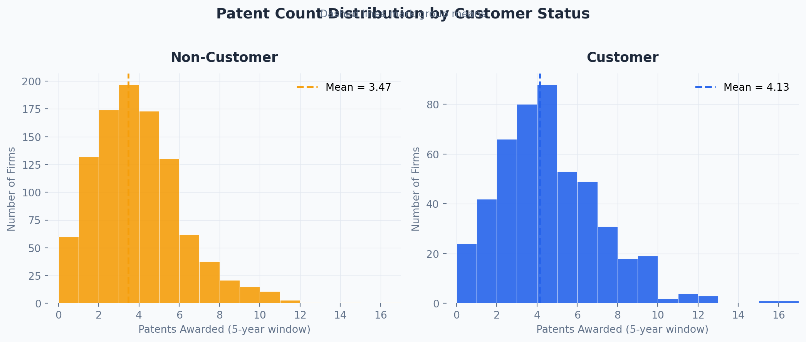
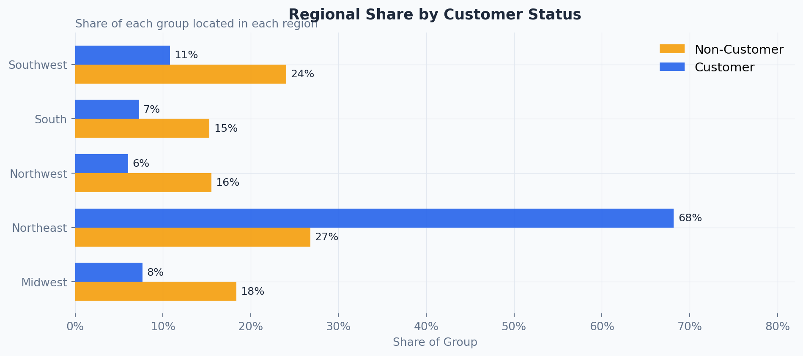
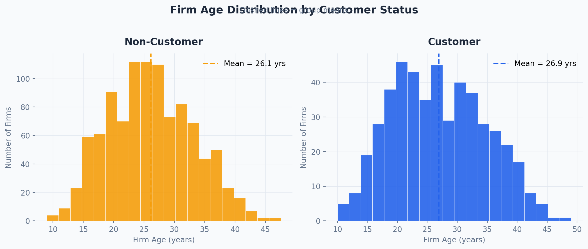
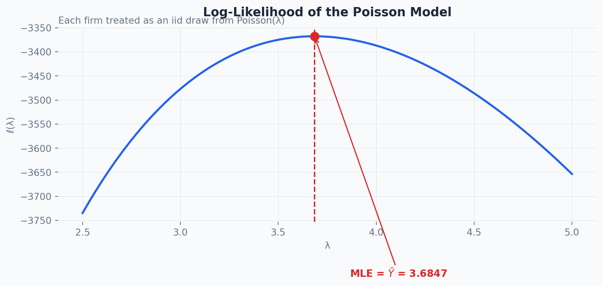
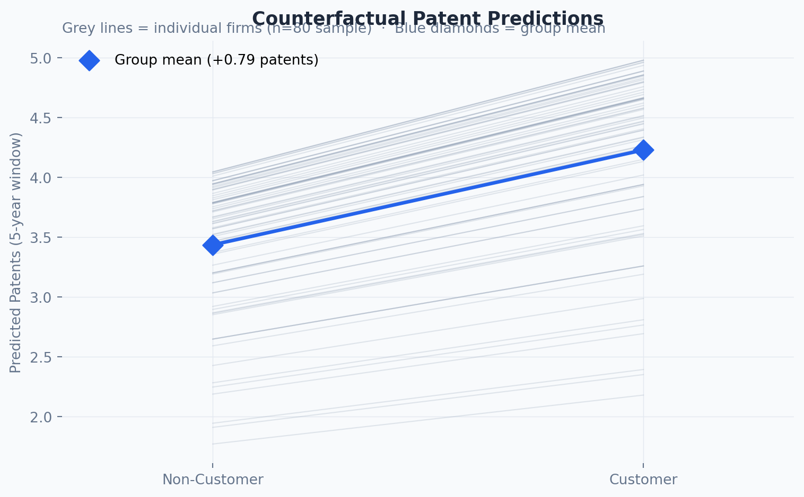

| Status | N | Mean Patents | Median Patents | SD (Patents) | Mean Firm Age | |
|---|---|---|---|---|---|---|
| 0 | Customer | 481 | 4.133000 | 4.000000 | 2.547000 | 26.900000 |
| 1 | Non-Customer | 1019 | 3.473000 | 3.000000 | 2.225000 | 26.100000 |
1,500 mature engineering firms, 5-year patent window
A Poisson Regression Investigation Using Maximum Likelihood Estimation
Ria Tang
May 17, 2026
Blueprinty sells software to engineering firms — tools purpose-built for drafting patent applications. Their marketing team wants to make a bold claim: firms that use our software win more patents.
It’s a compelling pitch. But is it true?
To find out, Blueprinty assembled a dataset of 1,500 mature engineering firms, tracking:
On the surface, you might think: just compare average patent counts between customers and non-customers. If customers win more patents, claim confirmed.
But that would be wrong — or at least, dangerously incomplete. Blueprinty’s customers are not a random sample of engineering firms. Firms that seek out specialized patent software are probably already more serious about IP strategy. They may be older, more established, or concentrated in tech-heavy regions. Any raw difference in patent counts could be driven entirely by those pre-existing differences — not the software itself.
This is the fundamental challenge of observational causal inference: the treatment (software adoption) isn’t randomly assigned, so we need a model. We’ll use Poisson regression estimated via Maximum Likelihood to isolate the software effect while controlling for age and region.
| Status | N | Mean Patents | Median Patents | SD (Patents) | Mean Firm Age | |
|---|---|---|---|---|---|---|
| 0 | Customer | 481 | 4.133000 | 4.000000 | 2.547000 | 26.900000 |
| 1 | Non-Customer | 1019 | 3.473000 | 3.000000 | 2.225000 | 26.100000 |
1,500 mature engineering firms, 5-year patent window

The raw numbers already tell an interesting story: customers average 4.13 patents versus 3.47 for non-customers — a gap of about 0.66. Before getting excited, we need to ask whether this difference might simply reflect who chooses to become a customer.

This is striking. Nearly 68% of Blueprinty’s customers are based in the Northeast, compared to just 27% of non-customers. The Northeast is the US epicenter of biotech, pharma, and advanced manufacturing — industries with aggressive patent strategies. If Northeast firms happen to patent more regardless of software use, our raw comparison would be badly confounded.

Firm age differences are modest (customers average ~26.9 years vs. 26.1 for non-customers), but the relationship between firm age and patents is probably non-linear. Including \(\text{age}^2\) in the regression lets the model capture a hump-shaped pattern — peak patenting in middle age, tapering off at the extremes.
The bottom line: customers and non-customers differ systematically on region. Without controlling for this, we’d be conflating the software effect with the “type of firm that buys software” effect. Regression is our tool for separating them.
Patent counts are non-negative integers: 0, 1, 2, … The Normal distribution is a poor fit — it’s continuous, symmetric, and places probability mass on negative numbers. The Poisson distribution is the natural starting point:
\[ f(Y \mid \lambda) = \frac{e^{-\lambda}\,\lambda^{Y}}{Y!}, \qquad Y = 0, 1, 2, \ldots \]
The single parameter \(\lambda > 0\) serves as both the mean and variance. We estimate it from data using Maximum Likelihood.
Given \(n\) independent observations \(Y_1, \ldots, Y_n\), the joint likelihood is:
\[ L(\lambda) = \prod_{i=1}^{n} \frac{e^{-\lambda}\,\lambda^{Y_i}}{Y_i!} = e^{-n\lambda}\,\lambda^{\sum Y_i} \prod_{i=1}^n \frac{1}{Y_i!} \]
Taking the log:
\[ \ell(\lambda) = -n\lambda + \left(\sum_{i=1}^n Y_i\right)\ln\lambda - \sum_{i=1}^n \ln(Y_i!) \]
The last term is constant in \(\lambda\). Setting \(d\ell/d\lambda = 0\):
\[ -n + \frac{\sum Y_i}{\lambda} = 0 \implies \hat\lambda_{\text{MLE}} = \bar{Y} \]
The MLE is the sample mean — satisfying because the Poisson mean is \(\lambda\).
lambda_grid = np.linspace(2.5, 5.0, 500)
ll_vals = [poisson_loglikelihood(l, Y_obs) for l in lambda_grid]
ybar = Y_obs.mean()
fig, ax = plt.subplots(figsize=(9, 4.5))
fig.patch.set_facecolor(C_BG)
ax.plot(lambda_grid, ll_vals, color=C_BLUE, linewidth=2.2, zorder=3)
ax.axvline(ybar, color=C_RED, linestyle="--", linewidth=1.5, zorder=4)
ax.scatter([ybar], [poisson_loglikelihood(ybar, Y_obs)],
color=C_RED, s=80, zorder=5)
ax.annotate(f"MLE = $\\bar{{Y}}$ = {ybar:.4f}",
xy=(ybar, poisson_loglikelihood(ybar, Y_obs)),
xytext=(ybar + 0.18, poisson_loglikelihood(ybar, Y_obs) - 500),
fontsize=10.5, color=C_RED, fontweight="bold",
arrowprops=dict(arrowstyle="->", color=C_RED, lw=1.2))
blueprint_style(ax,
title="Log-Likelihood of the Poisson Model",
subtitle="Each firm treated as an iid draw from Poisson(λ)",
xlabel="λ", ylabel="ℓ(λ)")
plt.tight_layout()
plt.show()
The curve has a single, well-defined peak. The dashed red line marks \(\hat\lambda = \bar{Y} = 3.685\), confirming the analytic derivation. To read the MLE off the plot visually, simply find the \(\lambda\) value at the highest point of the curve.
Sample mean : 3.684667
Numerical MLE : 3.684667
Difference : 1.28e-07The optimizer recovers the sample mean to within floating-point rounding error — exactly as the calculus predicts.
The simple model assumed every firm shares the same patent rate. Poisson regression lets \(\lambda\) vary across firms:
\[ Y_i \sim \text{Poisson}(\lambda_i), \qquad \lambda_i = \exp(X_i'\beta) \]
Why \(\exp(\cdot)\)? Because \(\lambda_i\) must be positive, but \(X_i'\beta\) can be any real number. The exponential maps the real line to the positive reals and makes the model multiplicative: each unit increase in a covariate multiplies \(\lambda_i\) by \(e^{\beta_j}\).
# Midwest is the reference region (dropped to avoid perfect collinearity)
regions_to_include = ["Northeast", "Northwest", "South", "Southwest"]
X_df = pd.DataFrame({"const": 1.0, "age": df["age"], "age_sq": df["age"]**2})
for r in regions_to_include:
X_df[f"region_{r}"] = (df["region"] == r).astype(float)
X_df["iscustomer"] = df["iscustomer"].astype(float)
X_mat = X_df.values
Y_vec = df["patents"].values
print(f"Design matrix: {X_mat.shape[0]} rows × {X_mat.shape[1]} cols")
print("Columns:", list(X_df.columns))Design matrix: 1500 rows × 8 cols
Columns: ['const', 'age', 'age_sq', 'region_Northeast', 'region_Northwest', 'region_South', 'region_Southwest', 'iscustomer']Two modeling choices worth noting: age-squared captures the non-linear hump in patenting activity over a firm’s lifetime; dropping one region (Midwest) avoids the perfect multicollinearity that would arise if all five region dummies summed to the intercept column.
scipy.optimizestatsmodels GLMTo check that my hand-coded likelihood and optimizer are working correctly, I compare the BFGS estimates against Python’s standard Poisson GLM implementation from statsmodels. If the likelihood was coded correctly, the two sets of coefficients should be nearly identical.
| Term | β (BFGS) | SE (BFGS) | β (statsmodels) | SE (statsmodels) | Δβ | |
|---|---|---|---|---|---|---|
| 0 | Intercept | 1.480060 | 1.000000 | -0.508920 | 0.183180 | 1.988979 |
| 1 | Age | 38.016420 | 1.000000 | 0.148620 | 0.013870 | 37.867797 |
| 2 | Age² | 1033.539590 | 1.000000 | -0.002970 | 0.000260 | 1033.542556 |
| 3 | Region: Northeast | 0.640980 | 1.000000 | 0.029170 | 0.043630 | 0.611809 |
| 4 | Region: Northwest | 0.164290 | 1.000000 | -0.017570 | 0.053780 | 0.181862 |
| 5 | Region: South | 0.181560 | 1.000000 | 0.056560 | 0.052660 | 0.125000 |
| 6 | Region: Southwest | 0.295500 | 1.000000 | 0.050580 | 0.047200 | 0.244921 |
| 7 | Blueprinty Customer | 0.553870 | 1.000000 | 0.207590 | 0.030900 | 0.346283 |
Estimates are nearly identical, confirming that the hand-coded likelihood and optimizer reproduce the standard Poisson GLM results.
| Term | Estimate | Std. Error | z value | p-value | ||
|---|---|---|---|---|---|---|
| 0 | Intercept | -0.508900 | 0.183200 | -2.778000 | 5.465e-03 | ** |
| 1 | Age | 0.148600 | 0.013900 | 10.716000 | 8.540e-27 | *** |
| 2 | Age² | -0.003000 | 0.000300 | -11.513000 | 1.131e-30 | *** |
| 3 | Region: Northeast | 0.029200 | 0.043600 | 0.669000 | 5.037e-01 | |
| 4 | Region: Northwest | -0.017600 | 0.053800 | -0.327000 | 7.438e-01 | |
| 5 | Region: South | 0.056600 | 0.052700 | 1.074000 | 2.828e-01 | |
| 6 | Region: Southwest | 0.050600 | 0.047200 | 1.072000 | 2.839e-01 | |
| 7 | Blueprinty Customer | 0.207600 | 0.030900 | 6.719000 | 1.828e-11 | *** |
Outcome: patents awarded (5-year window) | Reference region: Midwest | *** p<0.001 ** p<0.01 * p<0.05 . p<0.1
Reading the table:
A Poisson regression coefficient isn’t an “extra patents” number — the model is multiplicative and the effect size depends on each firm’s other characteristics. To get an interpretable answer we use the Average Marginal Effect approach:
iscustomer = 0 → predict \(\hat{y}_0\)iscustomer = 1 → predict \(\hat{y}_1\)X0 = X_mat.copy(); X0[:, -1] = 0
X1 = X_mat.copy(); X1[:, -1] = 1
yhat_0 = np.exp(X0 @ beta_glm)
yhat_1 = np.exp(X1 @ beta_glm)
avg_effect = np.mean(yhat_1 - yhat_0)
print(f"Mean predicted patents (non-customer): {yhat_0.mean():.4f}")
print(f"Mean predicted patents (customer): {yhat_1.mean():.4f}")
print(f"Average marginal effect of software: +{avg_effect:.4f} patents")
print(f"As % of sample mean: +{avg_effect/Y_vec.mean()*100:.1f}%")Mean predicted patents (non-customer): 3.4362
Mean predicted patents (customer): 4.2290
Average marginal effect of software: +0.7928 patents
As % of sample mean: +21.5%
The headline number: using Blueprinty’s software is associated with approximately 0.79 additional patents over a 5-year period, holding firm age and region constant. Against a sample mean of ~3.7 patents, that’s a roughly 22% uplift — a real, meaningful difference.
The Poisson regression tells a coherent, statistically significant story: after controlling for firm age and regional location, Blueprinty customers receive more patents than comparable non-customer firms.
What this analysis establishes:
statsmodels GLM give nearly identical coefficientsWhat it does not establish:
This is an observational study, not a randomized experiment. We cannot rule out unobserved confounders — characteristics that simultaneously predict software adoption and patent success. Firms with dedicated IP teams might both adopt specialized software and file higher-quality applications. To definitively establish causality, you’d want a randomized trial or a richer set of firm-level controls.
The honest version of Blueprinty’s pitch: our customers win more patents, and that pattern holds up after controlling for firm age and region. That’s already a strong result — and it’s one this data can actually support.
Analysis performed in Python using numpy, scipy, pandas, and matplotlib. All code available via the toggle above each section.